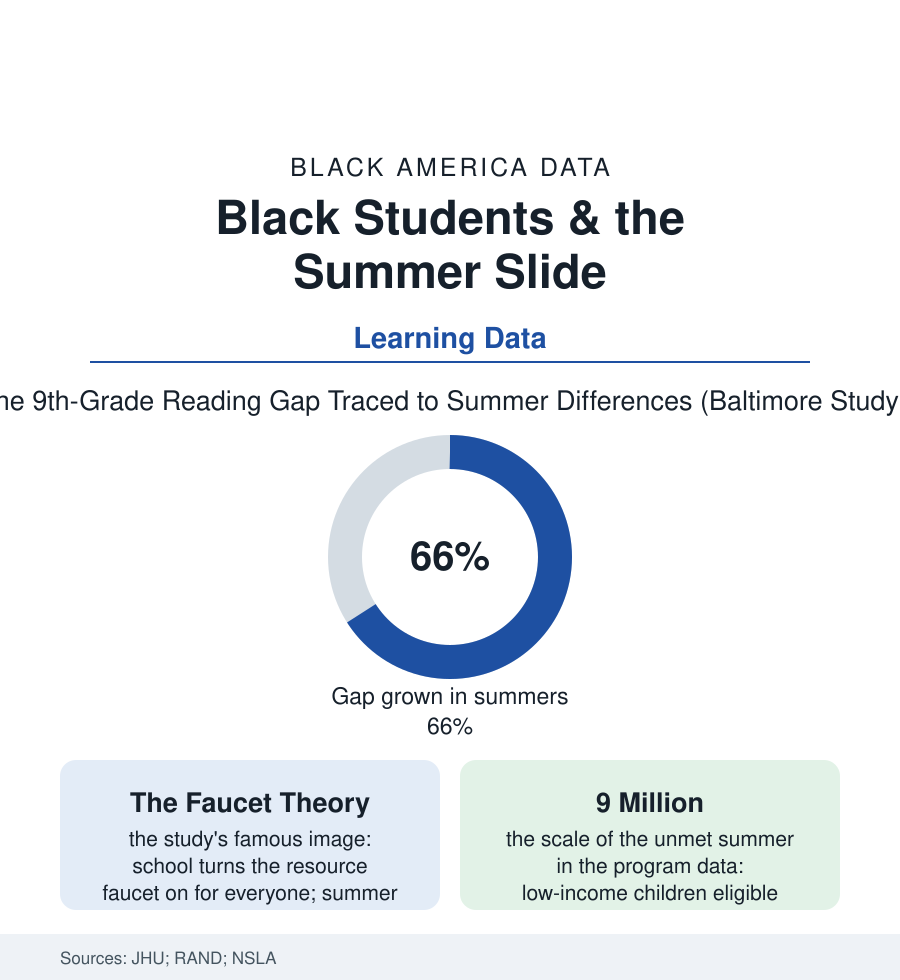

Black Education
The Summer File: Where the Gap Actually Grows
The most replicated finding in the achievement literature is a calendar: the gaps grow over the summers, not the school years. The summer file reads the evidence and the programs answering it.

Ask the data when the achievement gap grows and it gives an answer with a season: over the summers. The Baltimore Beginning School Study — three decades of following one city's children — found that Black and low-income students gained on their peers during the school years and lost the ground every June, until roughly two-thirds of the ninth-grade reading gap was attributable to the accumulated summers. This article reads the summer file. It remains the single most policy-legible finding in the entire achievement literature: the gap has a calendar, and the calendar has an address.
The Faucet and the Calendar
The researchers' metaphor entered the literature whole: the faucet theory — during the school year the resource faucet runs for every child alike (the school, for all this atlas's documented inequities, is the most equalizing institution in the child's day), and in summer it shuts off, leaving each child to the resources of their household and block: the camp and the library card and the museum membership flowing for some, the couch and the corner for others — the summer setback in the study's terms falling hardest in reading, the skill most dependent on the environment's print, and compounding arithmetically (each fall's re-teaching tax in the teacher surveys consuming the first month of the next grade, the curriculum's effective year shorter for the children who could least afford its shortening — the summer file quietly taxing every other file in this section). The replications have refined rather than reversed the finding: the national assessment analyses arguing over magnitudes (the gap's summer growth robust in the early grades, the measurement debates of the recent literature the seminar's own), the COVID summers standing as the theory's terrible natural experiment (the extended closures' losses in the assessment data falling in the study's exact predicted pattern — the faucet off for everyone, the drought measured by the neighborhood). And the historical file adds its usual depth: the long summer itself an artifact of an agrarian calendar the cities inherited, defended now by the camp industry's economics and the family vacation's culture — the calendar as policy fossil, its costs assigned by the data to the children with the least summer capital.
The Summer Shelf and Its Evidence
The answering infrastructure exists in every city of this atlas and seats a fraction of the need in the program data: the school districts' summer schools (historically remedial and stigmatized in the enrollment data — the enrichment rebrand of the recent years' programs, mixing academics with the camp shelf, posting the attendance the remedial model never could), the library systems' summer reading empires (the branch as the faucet's summer substation — the libraries file's most consequential season, their challenge programs' participation data tracking the reading file's neighborhoods), the Black summer institutions with their own long files (the church camps and vacation Bible schools, the fraternity and sorority youth programs, the freedom schools — the Children's Defense Fund's model grown directly from the 1964 summer's schools, its reading gains in the independent evaluations among the summer literature's strongest, its sites disproportionately in this atlas's cities), and the paid shelf — the camps and intensives whose prices the family data set against the median Black income and whose absence the study's arithmetic prices in test points. The RAND evaluations supply the operating instructions the successful programs share: voluntary, long enough, taught by real teachers, fed and transported — the transportation file's buses again, deciding which children the summer reaches. The file's verdict is unusually actionable for this atlas: the gap's largest single growing season is a scheduled, predictable, three-month event on a published calendar, and the interventions that blunt it are known, costed, and sitting in every city's recreation budget awaiting a decision the data made decades ago.
Reading the Summer Data
The summer file reframes the whole education section: the school year, for all its failures, is when the gap holds still — the growth happens in the ninety days nobody funds. The Baltimore children have grown up and had children of their own since the study began; their children's summers are on the calendar now. The faucet theory fits on an index card. So does its answer.
More in Black Education
Black Educational Attainment: High School Parity, the College Gap
About 89 percent of Black adults hold a high school diploma and one in four holds a bachelor's degree or higher — the attainment ladder, the college completion gap, and the generational trend.
Historically Black Colleges and Universities: Enrollment and Degrees
More than 100 HBCUs enroll roughly 290,000 students and award about one in six Black bachelor's degrees — an outsized share from a small sector. The federal education data.
Black College Enrollment: 2.4 Million Students
About 2.4 million Black students are enrolled in American colleges — nearly two-thirds of them women. The NCES enrollment data by sector, level, and trend.
Source: Johns Hopkins Beginning School Study (Alexander & Entwisle); RAND Corporation summer learning research; National Summer Learning Association; Brookings Institution education data.